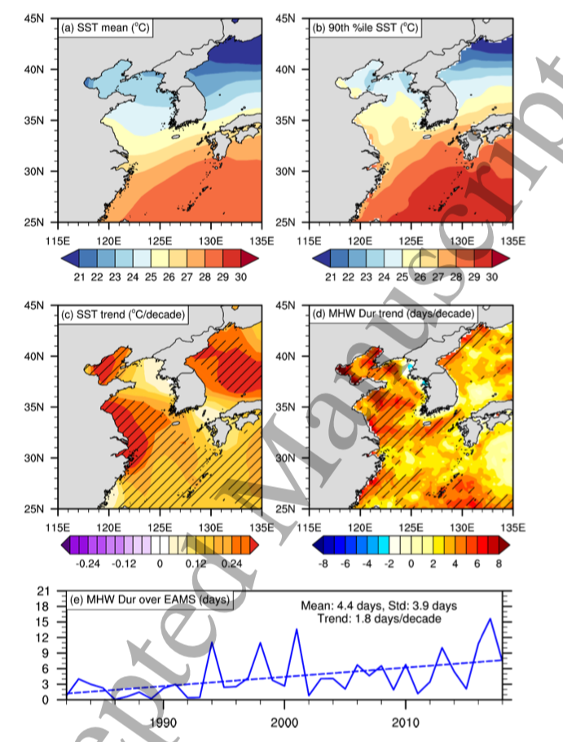

Lee et al. - 2020 - TWo modes of East Asian MHW
Ref: Lee et al 2020 Environ. Res. Lett. in press https://doi.org/10.1088/1748-9326/ab8527
1. What data did the author use in this paper?
-
Satellite observation: National Oceanic and Atmospheric Administration (NOAA) Optimum Interpolation (OI) SST data (OISST; Reynolds et al 2002),
1982~2018, $0.25^o\times0.25^o$, daily.
Variable : SST
-
Model data: NASA Modern-Era Retrospective Analysis for Research and Application Version 2 (MERRA2; Gelaro et al 2017)
$0.5^o\times 0.625^o$, 72 levels from surface to 0.01 hPa
Variable: geopotential height fields.
-
Global Precipitation Climatology Project (GPCP) data
Variable: Precipitation
2. What methods did the author use?
3.
Results:

Figure 1. Seasonal mean of (a) SST and (b) 90th percentile of daily SST using OISST data for 1982‒2011, and long-term trends of (c) seasonal mean and (d) total MHW duration days for 1982‒2018. (e) Time series of total MHW duration (solid line) with a least-square linear fit (dashed line). The dashed regions in (c) and (d) indicate the area where the trends of SST and MHWs are significant with confidence level.